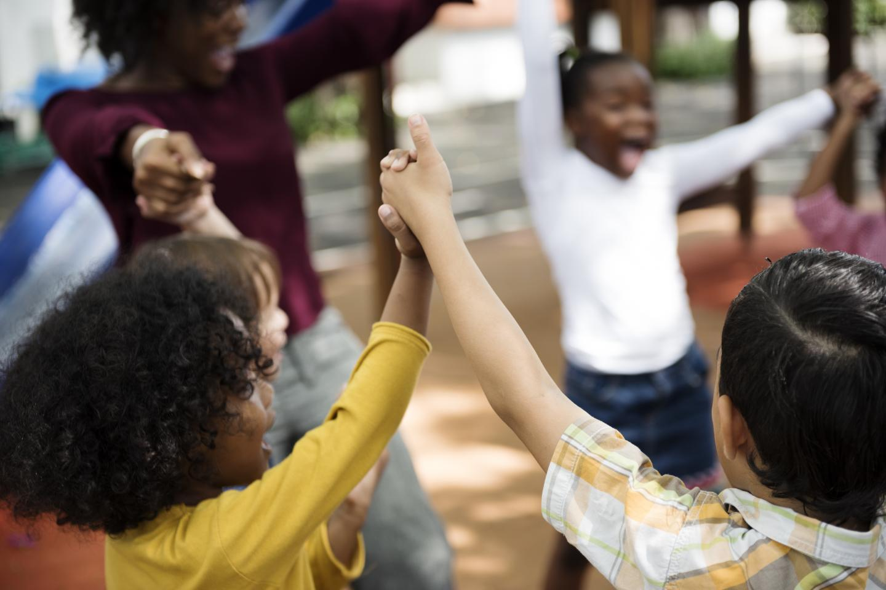
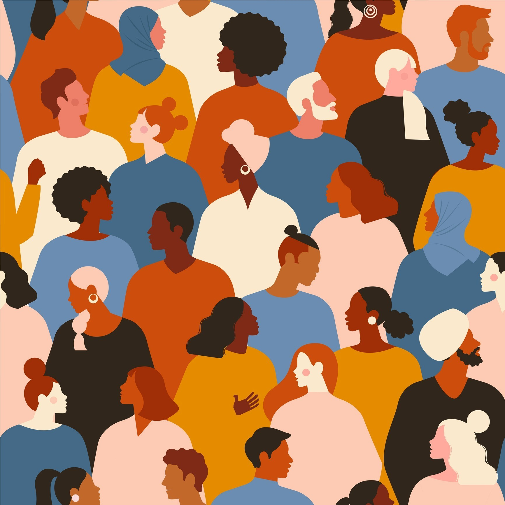

In the text chapter 3 they speak on racism and how this person was called a racist term. When racism hits you you dont know if its a joke at first sometimes or if that person was actually serious. When i was in high school this use to happen and i was once called a racist remark for being spanish. I relate to the chapter because going through that makes you feel really uncomfortable and its not ok.

We Stand Together
<
I believe racism is sometimes taken as a form of joking as kids but is also a very derogatory way to insult someone. Growing up as kids sometimes people would say racist terms to ther due to the fact they think its funny and theyll gain popularity when in reality its not cool, just hurtful to others. There are also people who just dislike people because of where they are from, which is a true racist and probably has had a bad experience with that race. Racism should nevr become the solution.

How to help?
Racism can stop by bringing awarness to the situation. Racism is not a solution or way about going to treat others. Imagine being on the other end of those remarks, it can be hurtful and its nothing good about it. As kids i would grow hearing these remrks as jokes and i feel if we bring awanress to how serious racism is we can help stop it or at least slow it down.